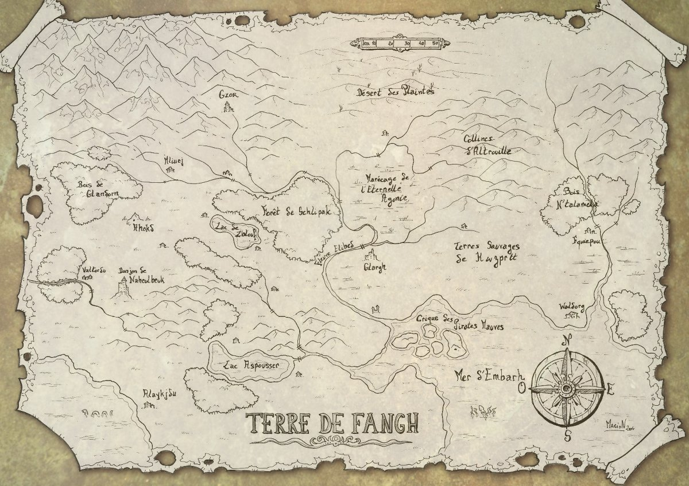
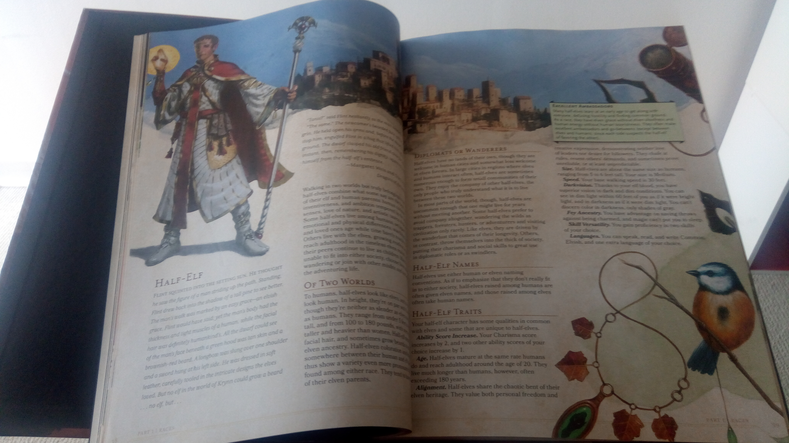
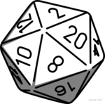

A one-page RPG
Hello! For this article I am going to write about one of my favorite activities, tabletop roleplaying game, and about the rules I wrote to be concise, balanced and to fit on one page. If you are not interested in the blah-blah, just scroll down to the ‘Downloads’ section at the bottom of the page.
What is a tabletop RPG?
To begin with, what is a tabletop RPG? It is an activity that takes place around a table, with paper, pencils, and strangely shaped dices. A classic scene would look like this:
The DM (Dungeon Master) describes the situation: ‘You are inside a corridor of the dungeon, there’s water dripping down the walls, and it’s rather cold. Suddenly, four goblins come out of a door on your left! They are small, green, stinky… well goblins. What do you do?
Albrect, Barnak and Choronte, our three valiant adventurers, reply with one voice that they prepare for the fight. The first character takes out his two-handed axe, the second one steps back with his bow, and as for the third one, she prepares a fireball spell.
Turn by turn, the characters and the goblins act, the players and the DM throw dices to decide the attacks outcomes, health points are lost, war cries sound, etc.
After much twists and turns, the goblins are defeated. They can be searched and Oh! they had 18 gold pieces on them. That’s already something.
Thereafter, the adventure can continue and the explorers go on on their quest of finding the treasure, rescuing the captive, or slaying the dragon.
This situation here is quite cliché, but an RPG can be played in worlds other than fantasy: space-opera, steampunk, alt-history, vampires and werewolves, or any fiction or non-fiction universe you can possibly imagine.
RPG is played in small groups of two to six people in general, and takes time as the sessions often reach four to five hours. (The longest I’ve done was a whole weekend with five hours of sleep, but that was a bit extreme.)
My RPG experience
Personally, what attracts me to this activity, is that it’s collaborative more than competitive: the players and DM all have the same goal, which is completing the quest. Furthermore, it’s a game of imagination, in which ingenuity is more rewarded than performance is.
As I’ve played RPGs since I was in high school, I could try out a variety of game systems and universes. The first I played, and also that I played most, was (as many French beginners), le Donjon de Naheulbeuk, based on the eponym mp3 series. Naheulbeuk is set in a parody fantasy world, the Terre de Fangh, of which the map is show below:

The rules of the Naheulbeuk RPG are made to be balanced and simple for beginners. As the game’s author is also the mp3 series creator, there are a good number of maps, places, game add-ons, object tables, and playable races, classes, flavours of magic and religions. It’s fairly pleasant to play, especially when one is already familiar with the universe, it helps give a richer setting.
I enjoyed in high school my character, Nevarius Nevusari, priest of Youclidh, a healer. The use of magic is not very complicated and can be understood after a read of the specific rules and one or two playing sessions. I have been a DM on Naheulbeuk, and it was very pleasant.
At one time with a friend, we had begun creating our own tabletop RPG, that to this day he is still making progress on. We had a plenty of playable races and flavours of magic each weirder than the last. It was really very amusing to do, and has been one of my best creative experiences, but unfortunately I have not had the opportunity of play many games in it.
Then I played Dungeons & Dragons. Et that was a shock. Because it is horrendously complex. But like, wow. The basic book is about 300-page long. Wait, I’ll go check… 320. I can’t imagine being a DM on this game. Well however as you below, it’s quite classy anyhow.

But the thing is, there are rules for litterally everything. For example, during one turn of a fight, you can do: 1 moving action; 1 fighting action; 1 interaction; 1 bonus action, maybe even something else. This is just an example among others that makes it unplayable for me, because you have to know all the rules et if they are not respected, there will always be someone there to nitpick. It’s normal to point out the irregularities, but hmm.
However there are upsides to this game: its broad choice of races, classes, and an impressive number of spells for those who want to practice magic. There are also a lot of add-ons.
And one last thing before I go on: Naheulbeuk is a free game that you can download online, whereas you have to buy the books for Dungeons & Dragons, and they are not cheap. But considering the amount of work behind them, if you like it they’re worth it.
But if as me you enjoy the actual gaming more than the cramming of rules and spellbooks, you could be interested in the system I wrote.
How I wrote simple rules
I have had the wish to create my own RPG system for a long time, without never taking the time to sit down and do it properly. Until I stumbled upon this: CRAM, the one-page RPG. CRAM (Compressed Roleplaying Adventure Manual) fits on one page and provides simple rules. What I disliked about it still, was that the characters were only judged by two stats: PHY (physical) and MEN (mental). In Dungeons & Dragons there are 7, in Naheulbeuk 5, but two is really too few in my opinion.

So here I go with some ideas gathered over the years.
- There will be four stats for the characters: Constitution, Dexterity, Attention and Magic. Four is a good number;
- The actions of charisma, intelligence and courage are roleplayed, one does not negociate with a merchant by rolling a dice;
- There will be luck points, useful to make the game a little more dynamic and use the critical successes and failures;
- No universe will be attached to the game, magic can be taken out or replaced by ‘psychic powers’ or whatnot;
- 6-sided and 20-sided dices (D6 and D20 in the jargon) will be needed to play, it’s a small investment, but it’s much funnier I think;
- The characters do not gain levels, they spend their experience points to evolve their characters.
These rules also fit on one single page, and are available in French and English. The character sheet was also produced and translated by yours truly.
The system was tested to this day in one single game session, for which I was the DM, and it went rather well. I would also like to know how it goes during a campaign, that is, several games following each other, to see how the characters evolve.
Downloads
- English rules (version from 26 Aug. 2018)
- English character sheet (version from 16 Aug. 2018)
- French rules (version from 26 Aug. 2018)
- French character sheet (version from 16 Aug. 2018)
Possible improvements
There are still some things that need some work. I would for instance like to find a system in which a character’s death will allow them to come back quickly in the game, maybe they just fainted when their HP reach 0? There may be a need for a real list of skills and basic spells. And lastly, I would like to create a list of playable races, just to prevent the case of everyone being human, but without having the classic elf and dwarf.
With some luck this can be a work of multiple people (notice how it’s written ‘public domain) at the bottom of the rules), so if you have the tiniest remark do not hesitatet to email me via the link on the top-left menu. A comment system is scheduled to arrive on this blog, but as for now, mails will have to do.